Final Project
The Roll-Aqua Barrel
Project theme
In the quest for creating meaningful and impactful designs, our team embarked on a mission to address one of the most pressing issues faced by Low and Middle-Income Countries (LMICs): access to clean and portable water.
The result of our collaborative efforts is the Aqua Barrel, a revolutionary solution designed to ease water transportation challenges and provide communities with a reliable source of purified water.

LCDs often grapple with the arduous task of transporting water from distant sources to their communities. Furthermore, the water obtained is frequently contaminated, leading to widespread health issues. Recognizing this predicament, our team sought to develop an innovative solution that not only simplifies water transportation but also ensures that the water is safe for consumption.
User Research
Population Growth:
Despite the fertility rate decreasing in less developed countries (LDCs) since the 1980s, their populations are still growing rapidly. From 2015 to 2020, the average number of children per woman in LDCs was four, while the global average was 2.5. Due to increased life expectancy without a corresponding decline in fertility, LDCs have an estimated population growth rate of 2.3%, twice the world average of 1.1%.
However, LDCs face challenges as they lack rapid improvements in productivity and employment. This rapid population growth increases the pressure on natural resources, hindering the achievement of a demographic dividend – a boost in economic growth resulting from demographic changes.
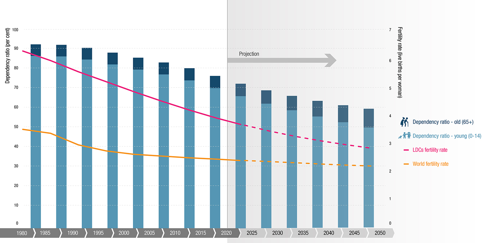
climate change:
The October-December 2022 season marked the fifth consecutive failed rainfall season, with both short and long rains falling below average since 2020. This resulted in the worst drought in 40 years (WMO, 2022, FAO 2022). The drought caused significant issues like harvest failures, poor pasture conditions, livestock losses, reduced surface water, and human conflicts, affecting 4.35 million people who require humanitarian aid (NDMA, 2022). Over 180,000 refugees from Somalia and South Sudan sought refuge in the drought-affected regions of Kenya and Ethiopia (UNHCR). 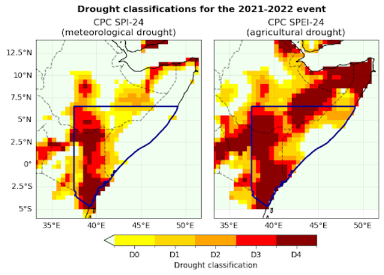
Figure 1: Left: Drought classifications based on Standardised Precipitation Index (SPI; US Drought Monitor, 2023), reflecting the magnitudes of precipitation deficit from Jan 2021-Dec 2022 relative to the 1980-2010 climatology in the CPC dataset.
Right: Drought classifications based on Standardised Precipitation Evapotranspiration Index (SPEI), reflecting the magnitudes of precipitation deficit from Jan 2021-Dec 2022 relative to the 1980-2010 climatology in the CPC dataset.
The bold black outline highlights the study region.
As of January 2023, approximately 9,210 metric tons of food and USD 7.29 million in cash-based transfers were distributed to aid the affected population (OCHA, 2023). Despite some reported rains in parts of Kenya by March 2023 (KMD, 2023), a quick recovery from the drought is unlikely, delaying improvements in food security until at least mid-2023.
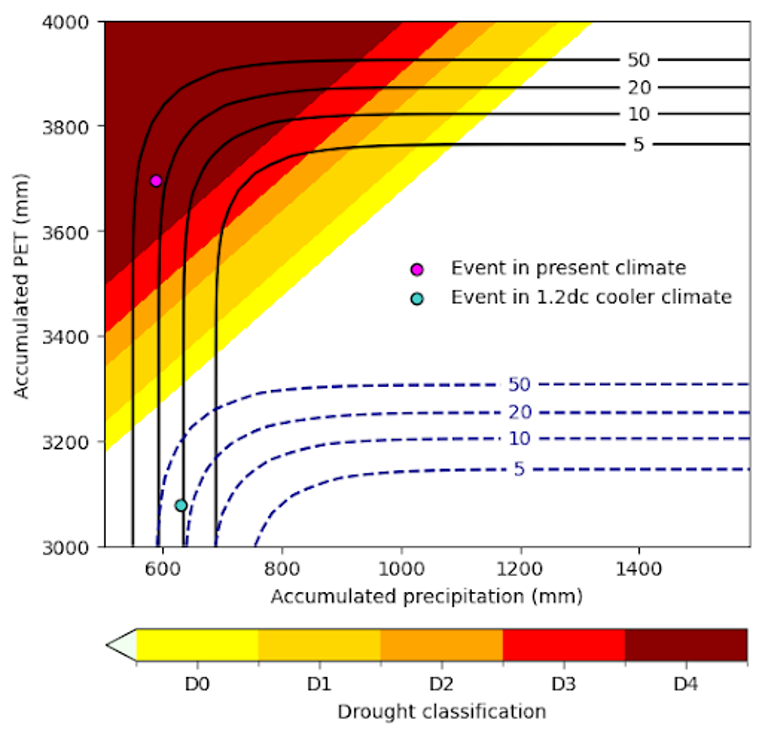
Figure 2: Joint distribution of 24-month precip and PET with corresponding SPEI drought classification.
The solid contours indicate return periods under the joint distribution in the current climate, while the dashed contours indicate the same return periods in a 1.2°C cooler climate.
The shaded contours represent different levels of drought severity.
The magenta point indicates the 2022 drought event in the current climate, with a joint return period of 26 years (uncertainty: 23-37 years), while the turquoise point shows an event of the equivalent severity in a 1.2°C cooler climate.
water scarcity
Global Water Stress Overview:New data from WRI’s Aqueduct Water Risk Atlas reveals that 25 countries, accommodating one-quarter of the global population, face extremely high water stress annually, utilizing almost their entire water supply. Additionally, around 4 billion people, comprising 50% of the world's population, experience highly water-stressed conditions for at least one month each year. 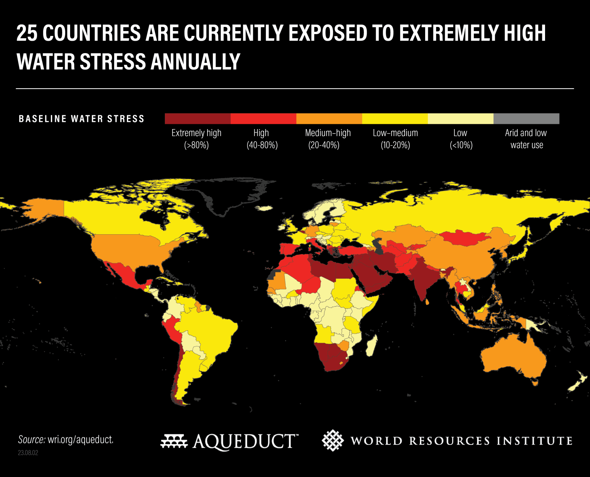
Impact on Lives and Resources: High water stress jeopardizes lives, jobs, food and energy security, as water is crucial for agriculture, livestock, energy production, human health, societal equity, and climate goals.
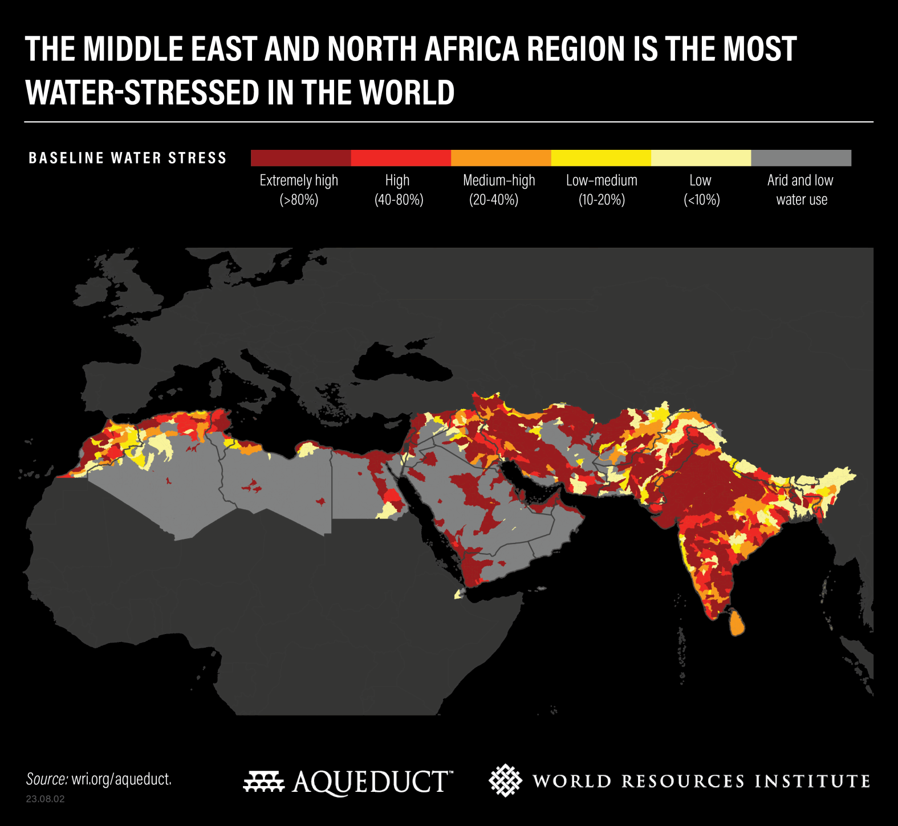
Factors Contributing to Water Stress:
Globally, increased water demand, driven by growing populations and industries, surpasses available resources. Lack of investment in water infrastructure, unsustainable water use policies, and climate change-induced variability further exacerbate water stress.
Countries Facing the Worst Water Stress:
Currently, 25 countries experience extreme water stress, using over 80% of their renewable water supply. The most water-stressed regions are the Middle East, North Africa, and South Asia.
Projected Worsening by 2050:
By 2050, an additional 1 billion people will face extreme water stress. Global water demand is set to increase by 20-25%, with political stability concerns in regions like the Middle East and North Africa.
Changing Water Demand Dynamics:
Sub-Saharan Africa anticipates a 163% increase in water demand by 2050, fostering economic growth but risking a 6% GDP decline due to inefficient water use. Meanwhile, water demand plateaus in wealthier nations.
Economic and Agricultural Impacts:
Rising water stress threatens 31% of global GDP ($70 trillion) by 2050. Water shortages pose risks to industrial interruptions, energy outages, and agricultural production losses, impacting global food security.
GDP Losses and Food Security:
India, China, Central Asia, and much of Africa could face GDP losses of 6-12% by 2050 due to inadequate water management. Global food security is at risk, requiring a 56% increase in food production to feed a projected population of 10 billion by 2050.
 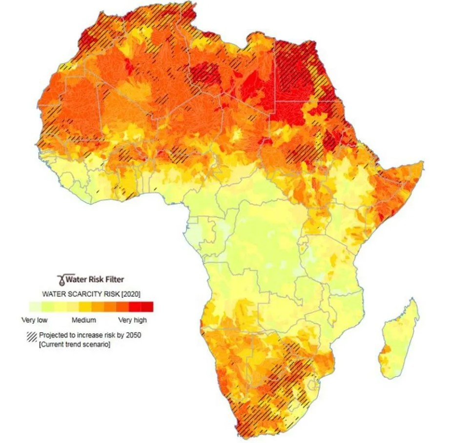
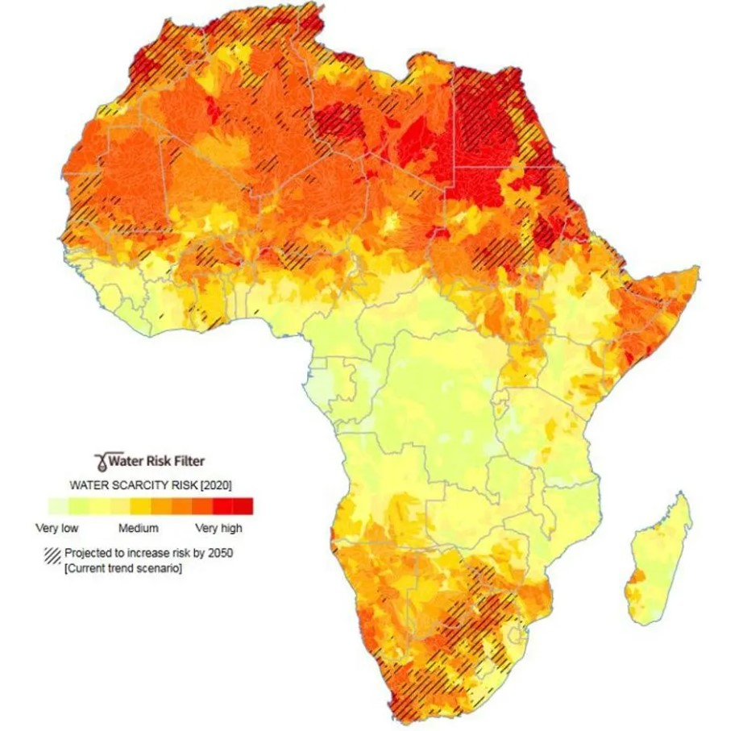
Figure 3. Current risk levels for water scarcity. The hatched areas indicate those places where risk is projected to increase by 2050. Data from WWF's Water Risk Filter.
Universal access to safe drinking water and sanitation facilities is an essential human right, recognised in the Sustainable Development Goals as crucial for preventing disease and improving human wellbeing.
Comprehensive, high-resolution estimates are important to inform progress towards achieving this goal.
We aimed to produce high-resolution geospatial estimates of access to drinking water and sanitation facilities.

Widespread Lack of Access:
Despite global progress, billions in LDCs still lack access to safe drinking water, sanitation, and hygiene .
Domestic Wastewater Treatment Challenges:
The level of domestic wastewater treatment remains very poor (below 30%) in Africa, exacerbating water quality issues .
Sustainable Development Goal (SDG) Targets:
SDGs emphasize universal access to drinking water, sanitation, and hygiene. However, achieving these targets by 2030 faces challenges in LDCs .
Imminent Global Water Crisis:
The UN warns of an imminent risk of a global water crisis, projecting a doubling of the urban population facing water scarcity in LDCs from 930 million in 2016 to 1.7–2.4 billion by 2050 .
Lack of Basic Sanitation:
A quarter of the world's population lacks safe drinking water, and 46% lacks access to basic sanitation, with significant proportions in LDCs facing these challenges.
Figure 4: Access to drinking water and sanitation indicators
Diseases people in LDCs face due to lack of drinkable water and therefore consumption of non-clear water
Globally, an estimated 633 million people lack access to safe water sources, 319 million of whom live in sub-Saharan Africa, and 2.4 billion of whom do not use improved sanitation, as defined by the WHO/UNICEF Joint Monitoring Programme .
Despite substantial progress made during the last decades, 11% of the global population are still not drinking improved water and only 64% are able to access improved sanitation . Diarrhea is the main killer of children, estimated to have killed 558,000 children aged 1−59 months in 2013 .
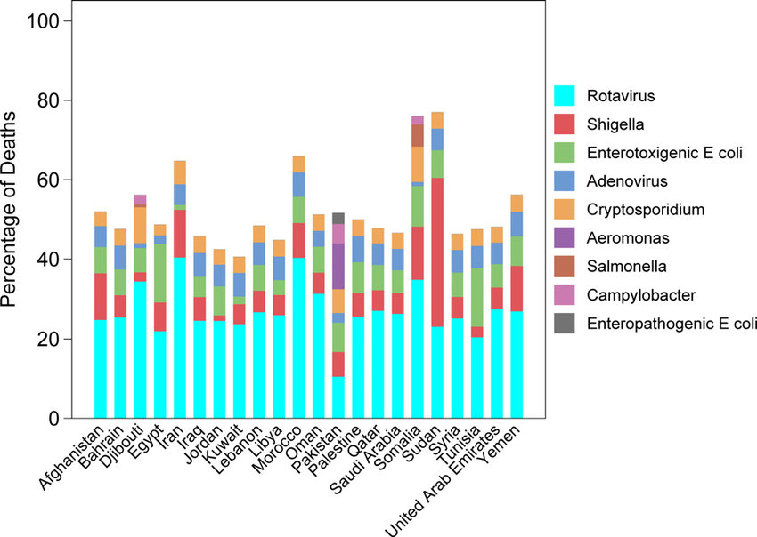 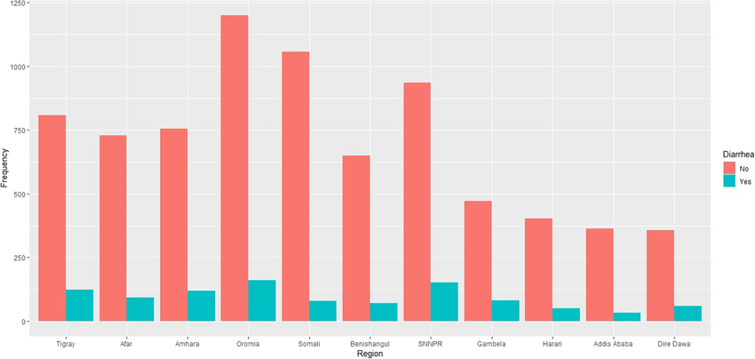 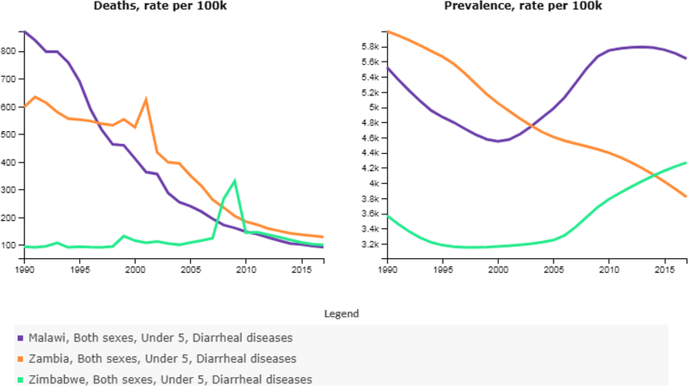
Key Tech Analysis
Turbidity Sensor
A turbidity sensor is a device that measures the cloudiness or haziness of a liquid, typically referring to the presence of suspended solids like silt, algae, or microorganisms. It works by using light to detect the amount of scatter caused by these particles in the liquid. Here's a breakdown of its key aspects:Function:
Types:
Output:
Applications:
Factors to consider when choosing a turbidity sensor:
LGZD Sensor
The LGZD sensor is a specific model of turbidity sensor, primarily used for hobbyist projects and educational purposes. Here's a breakdown of its key features:
Type: Nephelometric sensor, measuring scattered light at 90 degrees from the original beam.
Output: Analog voltage (0-4.5V) proportional to the turbidity level. Higher voltage indicates clearer water.
Operating voltage: 5V DC
Current consumption: 30mA (maximum)
Response time: < 500ms
Operating temperature: -30°C to 80°C
Benefits:
Limitations:
Applications:
Market Analysis
This market analysis assesses the potential of a water barrel with a built-in water purifier system, particularly in areas facing water scarcity or quality issues. The analysis considers key market drivers, potential target segments, competitive landscape, and challenges to consider. Overall, the market for such product holds promise, driven by rising concerns over water quality and access, but success hinges on effective marketing, affordability, and addressing specific needs of different target groups.
Market Drivers
Growing water scarcity: Climate change, population growth, and unsustainable water management are leading to increased water scarcity in many regions. This creates a demand for decentralized water solutions.
Concerns over water quality: Contamination of water sources with pollutants, chemicals, and microorganisms raises concerns about drinking water safety. This fuels the demand for efficient water purification options.
Disaster preparedness: Natural disasters and emergencies can disrupt water supplies, necessitating readily available sources of clean water.
Off-grid living: Individuals and communities choosing off-grid lifestyles require self-sufficient water solutions.
Target Segments
Rural communities: Areas with limited or unreliable access to clean water infrastructure.
Developing countries: Regions facing significant water quality and sanitation challenges.
Disaster-prone areas: Populations vulnerable to natural disasters that disrupt water access.
Outdoor enthusiasts: Campers, hikers, and adventurers seeking portable water purification solutions.
Off-grid households and communities: Those seeking self-reliance and sustainability in water access.
Competitive Landscape
Stand-alone water purifiers: Existing market with diverse technologies like reverse osmosis, UV filtration, and carbon filters.
Portable water purifiers: Lightweight and mobile options for outdoor activities and emergencies.
Rainwater harvesting systems: Collect and store rainwater for various uses, including potential integration with purifiers.
Challenges and Considerations
Cost: The product needs to be affordable for target communities, especially in developing countries.
Maintenance: Ease of filter replacement and system upkeep is crucial for long-term use.
Technology: Choosing the appropriate purification technology based on local water contaminants and user needs.
Awareness and education: Promoting awareness about water quality issues and the benefits of the product.
Distribution and access: Reaching geographically isolated populations and establishing distribution channels.
Conclusion
The market for a water barrel with a built-in water purifier system holds promising potential in addressing water scarcity and quality concerns, particularly in underserved communities. Careful consideration of target needs, affordability, technology choices, and marketing strategies are crucial for success.By effectively tackling these challenges and demonstrating the product's value proposition, this innovative solution can contribute significantly to improving water access and health for those in need.
References
Home Water Filtration Unit Market Size, Share & Trends by 2031Portable Water Purifiers Market Size Report, 2022-2027
UN-Water: SDG 6 - Clean Water and Sanitation
WHO: Drinking-water
Selling Strategy for Roll-Aqua Barrel in Least Developed Countries (LDCs)
Target Market Analysis
Understanding the unique challenges and needs of the target market is crucial. In LDCs, accessibility, affordability, and reliability are key factors. Consider local customs, preferences, and socioeconomic factors.Product Offering
Complete Water Solution Package: Barrel, Integrated Filter, Cleanliness Checking Device.
Filter Package: Integrated Filter and Cleanliness Checking Device.
Barrel: For water storage and easy transportation.
Integrated Filter: Easily attaches to the barrel for water purification.
Cleanliness Checking Device: Standalone device for water quality assessment.
Pricing Strategy
1. Affordable Packages:
2. Flexible Payment Options:
3. Promotions and Discounts:
Distribution Channels
1. Local Partnerships:
2. Door-to-Door Sales:
3. Community Engagement:
Marketing
1. Digital Campaigns:
2. Educational Materials:
3. Influencer Collaborations:
After-Sales Support
1. Training Programs:Continuous Improvement:
By combining affordability, adaptability, and strategic marketing, this selling strategy aims to make clean water solutions accessible to all in LDCs, contributing to improved health and well-being.
Design Background and Porblem Solving
The Roll-Aqua Barrel stands as an innovative solution to address the critical issue of limited access to drinkable water in LDC (Less Developed Countries) regions. Designed with the primary focus on cost-effectiveness, accessibility, low maintenance, and user-friendly operation, this portable water transport system aims to significantly alleviate the burden associated with water scarcity.

By providing a practical and affordable means of water filtration and transportation, the Roll-Aqua Barrel becomes a crucial tool in enhancing water accessibility and security, ultimately contributing to improved health and well-being in LDC communities. The design's simplicity and efficiency align with the specific needs of these regions, ensuring that it serves as a sustainable and impactful solution to a pressing problem.
The inclusion of a built-in filtration system in the base segment is a game-changer, empowering individuals to purify water on-site without the need for external resources. This not only reduces the dependence on centralized water sources but also mitigates the arduous task of traveling long distances to fetch drinkable water.


User scenario
First Scenario - Water Transport Ease:
As I wake up in my village, the realization hits that fetching water for daily use involves a long and strenuous journey. Carrying a large amount of water is not only heavy but also exhausting. However, with the Roll-Aqua Barrel, the task becomes remarkably easier. I assemble the barrel, and instead of lifting the weight, I simply roll it effortlessly to the distant water source. The convenience of dragging or rolling the barrel minimizes the physical strain, making water transportation a much more manageable and efficient process.


Second Scenario - Purification at the Source:
Living in an area where drinkable water is inaccessible, I find myself near a river, a potential source of water. However, the water in the river is not safe to drink. With the Roll-Aqua Barrel, equipped with an integrated water purification system, I can collect water from the nearby river without worry. The filtration system ensures that any water source, no matter how impure, can be turned into safe and drinkable water right at the point of collection, providing a vital solution to water scarcity.

Third Scenario - Selective Water Usage:
After collecting water from the river, I realize that I don't need to purify all of it for my daily use. The Roll-Aqua Barrel comes to the rescue with its innovative design. I open the separate lid dedicated to non-purified water, allowing me to use the collected water without passing it through the purification system. This thoughtful feature not only conserves energy but also ensures that resources are used judiciously according to specific needs.
Water Purification Systems Research
Water purification systems are designed to make water safe for drinking and other uses by removing impurities and contaminants:
1.Filtration: One of the primary methods is filtration, where water passes through a filter that physically traps particles, sediment, and larger impurities. This is similar to how a sieve or strainer works in your kitchen.
2.Sedimentation: Some purification systems use sedimentation, allowing heavier particles to settle at the bottom of a container. The clearer water can then be drawn off from the top.
3.Chemical Treatment: Adding chemicals like chlorine or iodine to water can kill or neutralize harmful microorganisms such as bacteria and viruses. These chemicals are often used in municipal water treatment facilities.
4.Boiling: Boiling water is a simple and effective method to kill many types of bacteria and parasites. This is a common practice in households without access to advanced purification systems.
5.Reverse Osmosis: This is a more advanced method that uses a semi-permeable membrane to remove molecules and ions, leaving behind purified water. It's effective in removing a wide range of contaminants, including salts and microorganisms.
6.UV Purification: Ultraviolet (UV) light can be used to disinfect water by inactivating bacteria, viruses, and other microorganisms. UV light disrupts the DNA of these organisms, preventing them from reproducing.
7.Activated Carbon: Many water filters use activated carbon to absorb impurities and contaminants. The porous surface of activated carbon attracts and traps molecules, removing them from the water.
Portable and small water filtration systems are designed for on-the-go use, making them convenient for activities like camping, hiking, or traveling. These systems are typically compact, lightweight, and easy to carry. One common type of portable water filter is a "personal water filter" or "straw filter.":
1.Filtration Mechanism:These portable filters often use a filtration mechanism, such as a hollow fiber membrane or a microfiltration membrane, to physically block contaminants from passing through. The tiny pores in the membrane are designed to capture particles, bacteria, and parasites, preventing them from entering the drinking water.
2.Activated Carbon: Many portable filters also include activated carbon. The activated carbon adsorbs (attracts and holds onto) certain chemicals, organic compounds, and unpleasant odors or tastes, improving the overall taste of the water.
3.Pump or Suction: Some portable filters require manual effort to draw water through the filtration system. This can be done through a hand pump or by using suction, similar to drinking through a straw. As you pump or suck, the water passes through the filter, where impurities are removed.
4.Chemical Treatment (Optional): Some portable filters may incorporate chemical treatment components, such as iodine or other disinfectants, to kill or neutralize harmful microorganisms that may not be effectively captured by the physical filtration alone.
5.Maintenance: Portable water filters usually have a limited lifespan or a specified volume of water they can effectively filter before needing replacement or maintenance. This is important to consider when planning for extended trips.
Final Design
Model Process and Prototyping

Fusion 360 Model
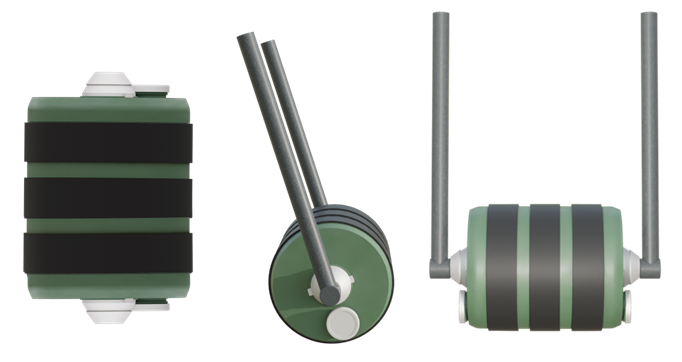The entire model was completed in Fusion360. We modeled it to realize some design considerations such as the detachable handles for it to stand vertically to either change the filter and/or fill it with water and extract water from the other end of the container where the clean water is.


Prototyping and Assembly
Parts were both 3D Printed and LaserCut. Below is the full assembly of parts for the Roller Prototype. The model has been scaled down for prototyping and demonstration purposes. Through 3d printing, we used ABS filament.

Assembly Demo
An illustration and video demonstrating how we assembled the prototype.


In this video, we demonstrate the water passing through the filter.
Barrel Handle are removable to position vertically in order to access and change the filter, add and take water from the filter.

Materials Used
Other Material Considerations
Water Purification check with Arduino
Turbidity Monitoring:The turbidity sensor is placed in the water to be filtered. It continuously measures turbidity levels in the water.
Arduino Processing:
The Arduino reads turbidity sensor data.
It categorizes water quality into:

based on predefined thresholds
Arduino code:
#include <Wire.h>
#include <LiquidCrystal_I2C.h>
LiquidCrystal_I2C lcd(0x27, 16, 2);
int sensorPin = A0;
void setup() {
Serial.begin(9600);
lcd.begin(16, 2); // Initialize the LCD with 16 columns and 2 rows
pinMode(2, OUTPUT);
pinMode(3, OUTPUT);
pinMode(4, OUTPUT);
}
void loop() {
int sensorValue = analogRead(sensorPin);
Serial.println(sensorValue);
int turbidity = map(sensorValue, 0, 750, 100, 0);
delay(100);
lcd.setCursor(0, 0);
lcd.print("turbidity:");
lcd.print(" ");
lcd.setCursor(10, 0);
lcd.print(turbidity);
delay(100);
if (turbidity < 20) {
digitalWrite(2, HIGH);
digitalWrite(3, LOW);
digitalWrite(4, LOW);
lcd.setCursor(0, 1);
lcd.print(" its CLEAR ");
}
if ((turbidity > 20) && (turbidity < 50)) {
digitalWrite(2, LOW);
digitalWrite(3, HIGH);
digitalWrite(4, LOW);
lcd.setCursor(0, 1);
lcd.print(" its CLOUDY ");
}
if (turbidity > 50) {
digitalWrite(2, LOW);
digitalWrite(3, LOW);
digitalWrite(4, HIGH);
lcd.setCursor(0, 1);
lcd.print(" its DIRTY ");
}
}
 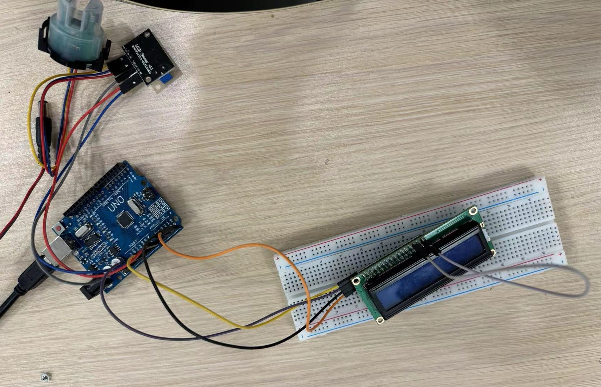
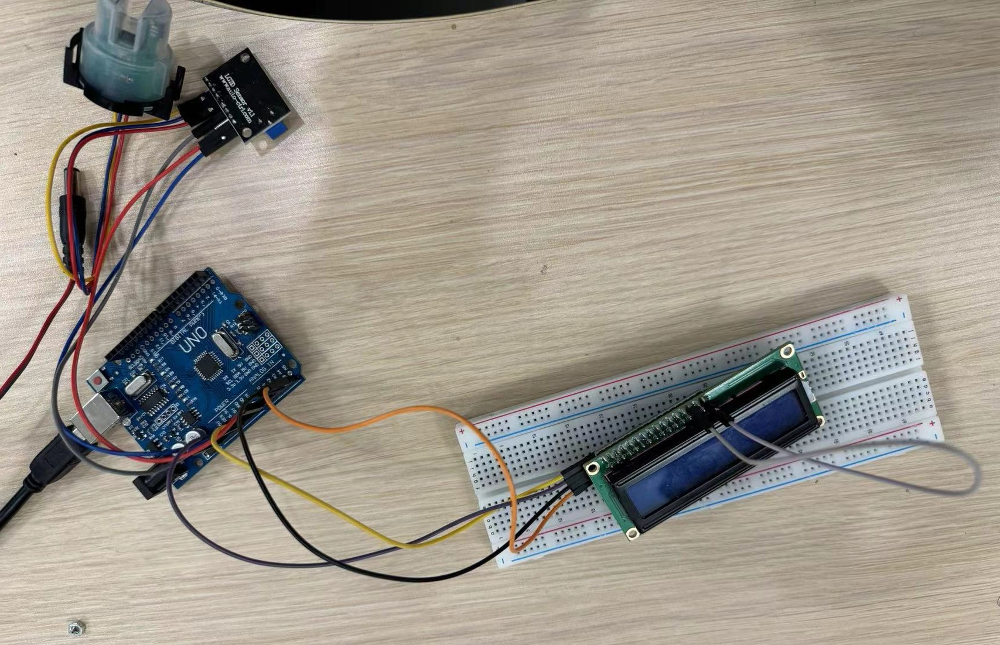
For future consideration:
Sustainable Development Goals (SDGs)
Billions of people still lack access to safe water, sanitation, and hygiene, despite improvement in the provision of these basic services. Water scarcity is a growing problem in many parts of the world, and conflicts and climate change are exacerbating the issue. In addition, water pollution is a significant challenge which affects both human health and the environment in many countries.

The COVID-19 pandemic poses an additional impediment, impairing access for billions of people to safely managed drinking water, sanitation and hygiene services – services desperately needed to prevent the virus from spreading.
Now more than ever the world needs to transform the way it manages its water resources and delivers water and sanitation services for billions of people. Urgent action is needed to overcome this global crisis, as it is affecting all countries around the world, socially, economically and environmentally.
Sustainable Development Goal 6 (SDG 6) on water and sanitation, adopted by United Nations Member States at the 2015 UN Summit as part of the 2030 Agenda for Sustainable Development, provides the blueprint for ensuring availability and sustainable management of water and sanitation for all.
Reference:
Sustainable Development